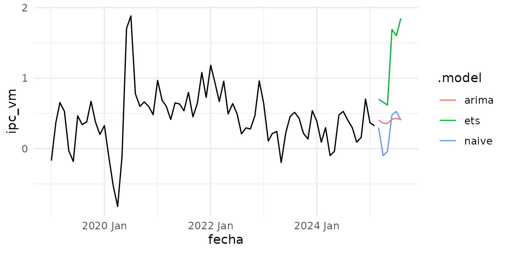

Dominican Inflation Data
ipc_data.RmdInflation is undoubtedly one of the most important macroeconomic variables and the core of the monetary policy in the Dominican Republic. Its evolution affects the stability of real variables such as consumption and investment, attracting analysts’ attention and being frequently consulted.
This article demonstrates how to quickly access inflation
expectations in the Dominican Republic using the databcrd
package, specifically the get_ipc_data() function.
Published Inflation Breakdowns
- General: National inflation without breakdowns
- By groups: Breakdown by groups of goods and services
- By regions: Inflation specific to the country’s macro-regions
- By components: Inflation of tradable and non-tradable goods
- Core: Core inflation, excluding volatile items
- Items:
With the package, all inflation breakdowns can be accessed using the
get_ipc_data() function. Simply specify the
desagregacion argument. The possible values are:
"general", "grupos",
"subyacente", "regiones", "tnt",
and "articulos".
General Inflation
With get_ipc_data("general"), the updated general
inflation data is downloaded, including the index (ipc),
monthly variation (ipc_vm), year-over-year variation
(ipc_vi), variation since December (ipc_vd),
and the 12-month average variation (ipc_p12).
inflacion_general <- get_ipc_data("general")
inflacion_general
#> # A tibble: 494 × 8
#> fecha year mes ipc ipc_vm ipc_vd ipc_vi ipc_p12
#> <date> <chr> <dbl> <dbl> <dbl> <dbl> <dbl> <dbl>
#> 1 1984-01-01 1984 1 1.38 1.74 1.74 7.05 5.57
#> 2 1984-02-01 1984 2 1.42 2.81 4.60 11.2 6.01
#> 3 1984-03-01 1984 3 1.44 1.23 5.89 11.9 6.52
#> 4 1984-04-01 1984 4 1.46 1.57 7.55 14.9 7.36
#> 5 1984-05-01 1984 5 1.48 1.20 8.84 15.2 8.26
#> 6 1984-06-01 1984 6 1.54 4.31 13.5 19.6 9.49
#> 7 1984-07-01 1984 7 1.56 1.29 15.0 20.7 10.8
#> 8 1984-08-01 1984 8 1.57 0.455 15.5 20.1 12.0
#> 9 1984-09-01 1984 9 1.64 4.69 20.9 24.8 13.7
#> 10 1984-10-01 1984 10 1.68 2.34 23.8 26.3 15.4
#> # ℹ 484 more rowsLet’s generate graphs for each variable.
# Function to plot inflation data
plot_ipc_data <- function(data, variable, title, start_year = 2018) {
data |>
filter(year == start_year) |>
ggplot(aes(x = fecha, y = {{ variable }})) +
geom_line() +
theme_minimal() +
ggtitle(title) +
theme(
axis.title = element_blank(),
plot.title.position = "plot"
)
}
plot_ipc_data(inflacion_general, ipc, "Consumer Price Index")
plot_ipc_data(inflacion_general, ipc_vm, "Monthly Variation of CPI") +
scale_y_continuous(labels = \(x) scales::comma(x, accuracy = 0.1, suffix = "%"))
plot_ipc_data(inflacion_general, ipc_vi, "Year-over-Year Variation of CPI") +
scale_y_continuous(labels = \(x) scales::comma(x, accuracy = 0.1, suffix = "%"))
Now a naive forecast of inflation
library(tsibble)
#> Registered S3 method overwritten by 'tsibble':
#> method from
#> as_tibble.grouped_df dplyr
#>
#> Attaching package: 'tsibble'
#> The following objects are masked from 'package:base':
#>
#> intersect, setdiff, union
library(fable)
#> Loading required package: fabletools
library(feasts)
ts_ipc <- inflacion_general |>
mutate(fecha = yearmonth(fecha)) |>
select(-mes) |>
as_tsibble(index = fecha)
models <- ts_ipc |>
model(
ets = ETS(box_cox(ipc_vm, 0.3)),
arima = ARIMA(ipc_vm),
naive = SNAIVE(ipc_vm)
)
models
#> # A mable: 1 x 3
#> ets arima naive
#> <model> <model> <model>
#> 1 <ETS(A,N,A)> <ARIMA(3,1,1)(2,0,0)[12]> <SNAIVE>
models |>
forecast(h = "6 months") %>%
autoplot(filter(ts_ipc, year > 2018), level = NULL) +
theme_minimal()